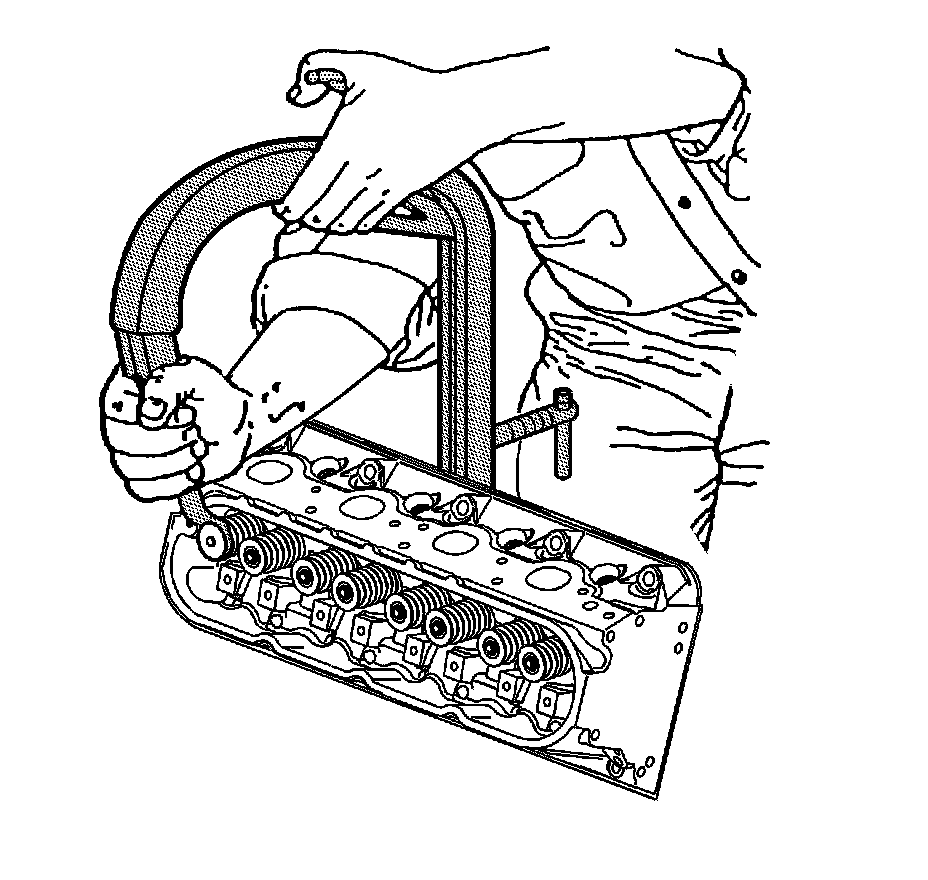
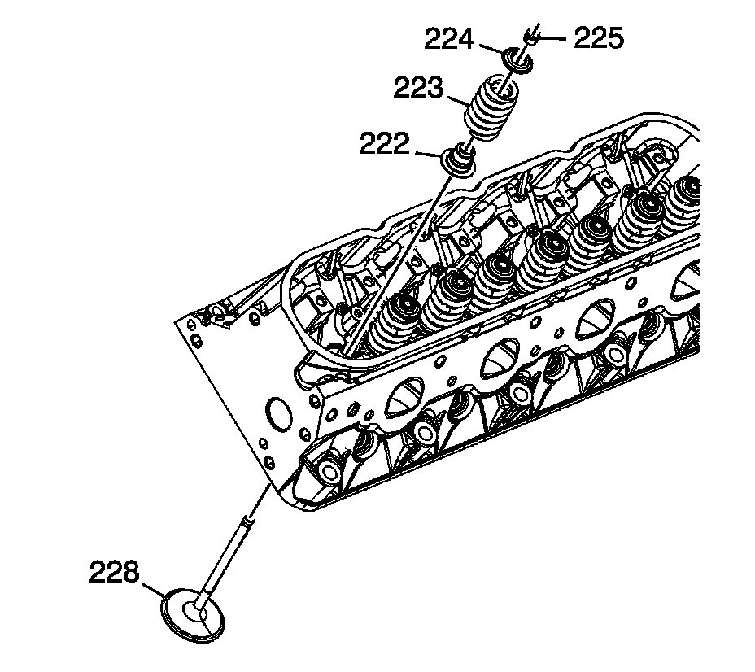
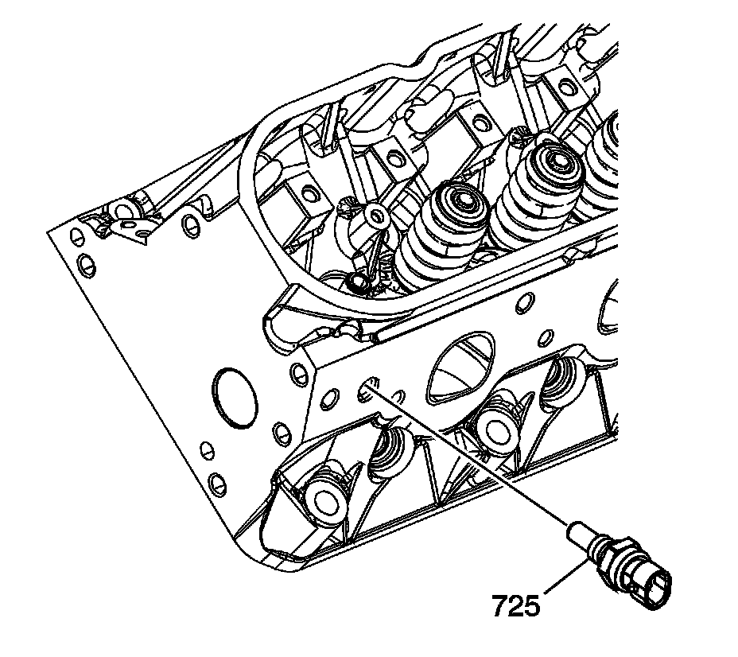

49. Cylinder Head Disassemble
Cylinder Head Disassemble
Tools Required
J 8062 Valve Spring Compressor - Head Off

Important:
^ With the components at room temperature, remove the spark plugs from the cylinder head.
^ Mark, organize, or sort the cylinder head components for assembly. Return the components to their original location during assembly.
Remove the spark plugs from the cylinder heads.
1. Use the J 8062 in order to compress the valve spring.

2. Remove the valve stem keys (225).
3. Remove the valve spring cap (224).
4. Remove the valve spring (223).
5. Remove the valves (228).
6. Remove the valve stem oil seal (222). Refer to Separating Parts.

7. Remove the cylinder head core hole plugs (216), as required.

8. Remove the coolant temperature sensor (725) from the left cylinder head.

9. Remove the cylinder head plug (229) from the right cylinder head.